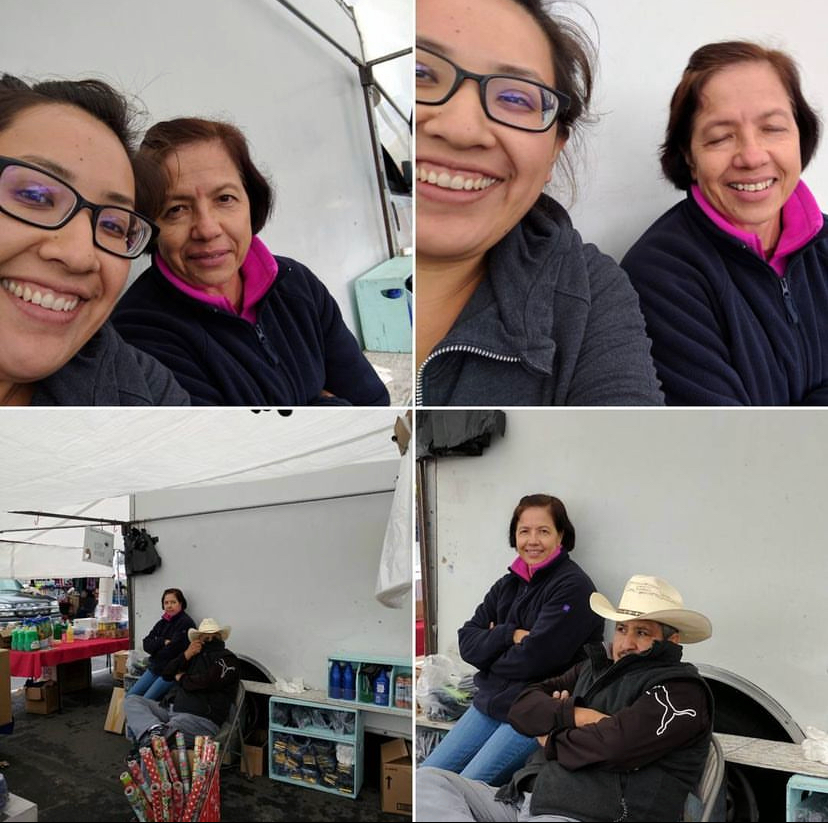

Early Life
Born & raised in Pomona, I would spend the weekends working with my parents at the Bel-Air Swapmeet. Early mornings and long hot days would teach me the importance of hard work.
Waking up at 5am, rushing to put out merchandise, and selling til closing time was a typical weekend with my family. Monday-Friday I would apply myself at school, and on the weekends it was family time... at the swapmeet! I'd help my parents sell, display merchandise, and clean up.

Waking up before the sun rises was often difficult as a kid, but now I see the hard work and effort that my parents did for my siblings and I. Without that experience I can't say that I'd be the strong, independent Latina that I am today.
My weekdays would be full of essays, presentations, math tests, book reports, art projects, and most importantly... my path to Stanford University! During highschool, I applied myself to my studies, I joined the art club, spent long hours at the library and made sure everything was in place. All of my hard work ensured that I graduated valedictorian in highschool and earned my spot at Stanford!
Stanford 🎓
I graduated Stanford with a smile on my face and pride like no other. My time at Stanford was quite the experience. I lived in Casa Zapata, met other first generation students, and embraced new academic challenges. I had the opportunity to work at El Centro Chicano while at Stanford. In that time, I helped set up the Zoot Suit play production, Dia De Los Muertos events, and helped entering students feel at home. After all, there is no better feeling than being in your casita!
Chocolate Croissants and Crumbling Empires
I took the opportunity to travel abroad while at Stanford. As a first generation student, I jumped at any chance to travel and experience life outside of my comfort zone. My thirst for new experiences took me to Chile, Rome, Croatia and Germany! The culture, the politics, the lifestyles I experienced where all incredible.
Never did I think I'd be able to sit at the plaza de San Pedro in Chile, or visit the Colosseum in Rome, see the Berlin Wall or visit the deeply emotional Holocaust Museum.
My favorite part about traveling was the food. The palta I ate in Chile was delightful. The bratwurst in Germany was iconic. The gelatto in Rome was so refreshing. BUT the chocolate croissants I had in Germany! Oh my, oh my, those were to die for! Dreamy, soft, melty chocolate nestled in a warm flaky croissant... it's what dreams are made of! So köstlich!
Check me out on page 14!